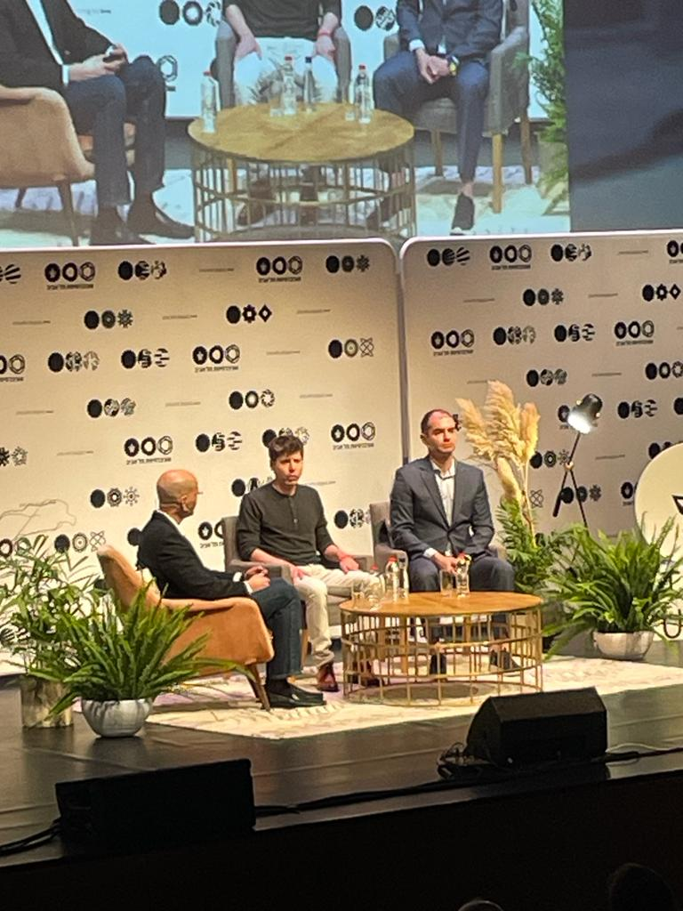
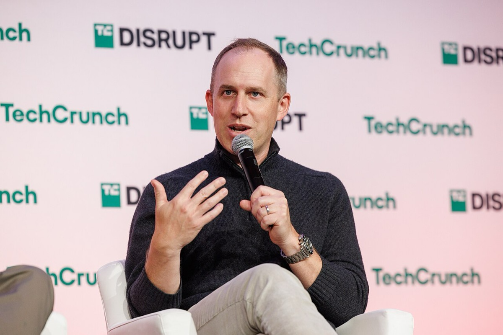
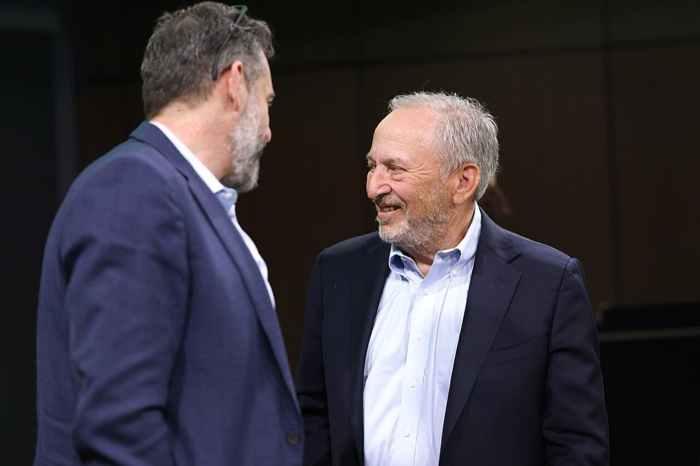
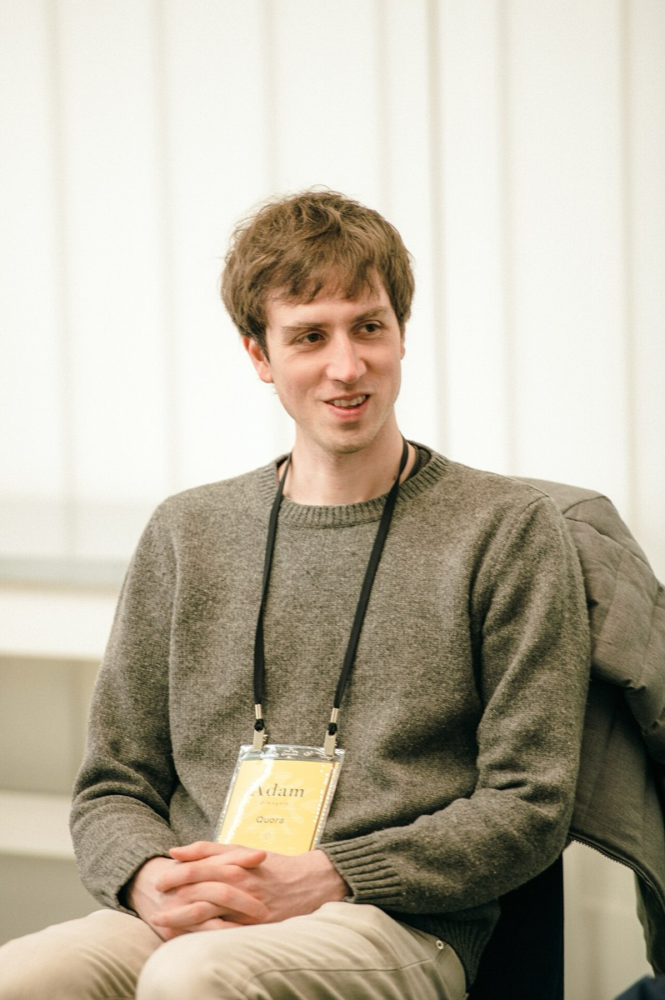
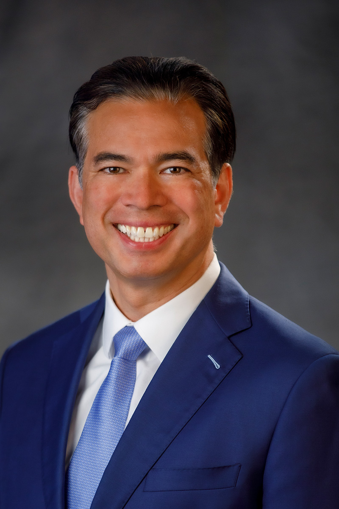
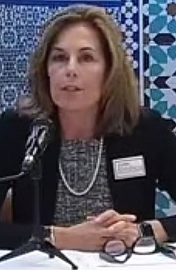

2. 解任後の本人の結果。2023年11月17日、非営利ボードが本人を CEO から解任した。同月29日に CEO へ復帰した。2025年10月28日の到達点で本人は OpenAI Group PBC の CEO であり、Foundation ボードにも座る。しかし PBC 取締役の全員任免権は Foundation が単独で保持する。本人が得た結果は CEO 職の回復と維持であり、自分を解任しうる任免権の取得ではない9124144。
主張：2023-11-17に非営利ボードが本人を CEO 解任し、同11-29に本人は CEO へ復帰した。2025-10-28の到達点で本人は OpenAI Group PBC の CEO であり Foundation ボードにも座るが、PBC 取締役の全員任免権は Foundation が単独で保持する。したがって本人が得た結果は CEO 職の回復と維持であり、2023年に自分を解任した系譜の任免権の取得ではない。 反証条件：クロージング時点の公式で、本人または投資家側が PBC 取締役の全員任免権を持つ場合。または Foundation が Class N 由来の全員任免権を持たないと公式が書く場合。 判定：支持（解任・復帰・到達点での役職と任免権帰属。PBC 化の発案者・採決の一次は未確認のため、本人が構造変更を主導したとは判定しない）
2023年11月17日の公式発表は、ボードが本人を CEO から解任したと書く。従業員約770人中700人超の署名、Microsoft の受け皿提示、11月29日の復帰が続いた。WilmerHale 要約は「信頼の崩壊」「短縮手順」「解任は必須ではなかった」と整理した9111210。ここで確定した事実は、非営利側の任免権が本人の CEO 職を取り消せた、という一点である。
復帰後も本人は CEO に在任した。2024年12月27日の公式案は PBC が事業を運営・支配する方向を書いた。2025年5月5日の改訂は「非営利が支配を維持する」へ切り替えた。いずれも本人在任中に公表された公式文である。案の起草者とボード採決の一次は確認できていない。本人の個別発言の一次も同様である4546。到達点の帰結は本人の役職と任免権の帰属で読む。

2023年6月5日、テルアビブ大学で並ぶ Ilya Sutskever（左）と本人。Sutskever は2023年11月17日に本人を CEO から解任した非営利ボードの一員であり、11月29日の新初期ボードには残らなかった。主張2の起点で、解任を決めた任免権の保持者と解任された本人が同じ写真に写る。写真：Eladkarmel／CC BY-SA 4.0／Wikimedia Commons



左は2024年10月29日の TechCrunch Disrupt で登壇する Bret Taylor である。中央は2025年3月4日にアリゾナ州テンピで講演する Larry Summers、右は The Grove 2022 での Adam D'Angelo である。2023年11月29日に本人が CEO へ復帰した時の新初期ボードはこの3人である。D'Angelo は解任時のボードから残った唯一の取締役である。本人は復帰の当事者だが、このボードの構成員ではなかった。2025年10月28日の到達点で Taylor は Foundation ボードの議長であり、Foundation が PBC 取締役の全員任免権を持つ。写真：TechCrunch／CC BY 2.0；Gage Skidmore／CC BY-SA 2.0；Village Global／CC BY 2.0／Wikimedia Commons


左はカリフォルニア州司法長官 Rob Bonta の公式肖像（州司法長官室）。右は2018年のデラウェア州司法長官選挙討論会での Kathy Jennings である。2025年10月27日の MOU と10月28日の非異議文書を出したのは、この2人が率いる州司法長官室である。両文書は、非営利が Class N を持つ限り非営利ボードが PBC 取締役の任免権を単独で持つことを非異議の条件に置く。任免権の帰属を本人個人へ移すには、この条件の変更が必要になる。写真：California Attorney General's office／Public domain；www.Tarbia.TV／CC BY 3.0／Wikimedia Commons
2025年10月28日の公式は次を同時に書く。(1) 本人は Foundation ボードの一員であり、OpenAI Group の CEO である。(2) Foundation は特別な議決・統治権により PBC 取締役の全員を任命し、いつでも交代できる。(3) Foundation の持分は26%（約1,300億ドル評価）である。California 州司法長官の MOU（2025-10-27）と Delaware 州司法長官の非異議（2025-10-28）は、Class N を持つ限りの支配と任免権を条件に挙げる。任免権の帰属先は本人ではなく Foundation である41424344。
判定：主張2は支持。支持の内容は次の比較までである。解任で失った CEO 職を本人は回復・維持した。一方で2023年に自分を解任した系譜の全員任免権は Foundation に残り、本人個人へ移らなかった。負債調達不能が再資本化の主因かどうかは、本主張の反証条件に入らない。
主張2の起点である。非営利ボードが営利事業の CEO を即時解任できる構造は、セーフガードとして設計されていた。2023年11月17日の解任から21日の原則合意までに次が起きた。主要投資家への事前通知はなかった。従業員約770人中700人超が署名した。Microsoft が受け皿を提示した。WilmerHale 要約は「信頼の崩壊」「短縮手順」「解任は必須ではなかった」と整理した91011。セーフガードが短期間の統治真空を生じた、という整理は残る。2025年10月の到達点でも、PBC 取締役の全員任免権は Foundation 側に残る。
2019年の capped-profit 文は、アルゴリズムだけでなく計算資源のコストが制約だと書く6。同年のブログ「How To Be Successful」は「急成長するものを所有すること」と書く35。OpenAI で直接持株を取らない選択と、Oklo 等での受益保有開示は、この二つの文を並置すると緊張関係になる。緊張の解消は付与契約の有無で決まるが、確定契約は未確認である。
We’ll need to invest billions of dollars in upcoming years into large-scale cloud compute, attracting and retaining talented people, and building AI supercomputers.
OpenAI「OpenAI LP」、2019年3月11日6
⑦語録Quotes
主張の検証に必要な発言に限る。日付・媒体が特定できるものだけを置く。
⑧誰が得をするか / 残っている問い / 出典Winners / Open Questions / Sources


.jpg){kind=link}